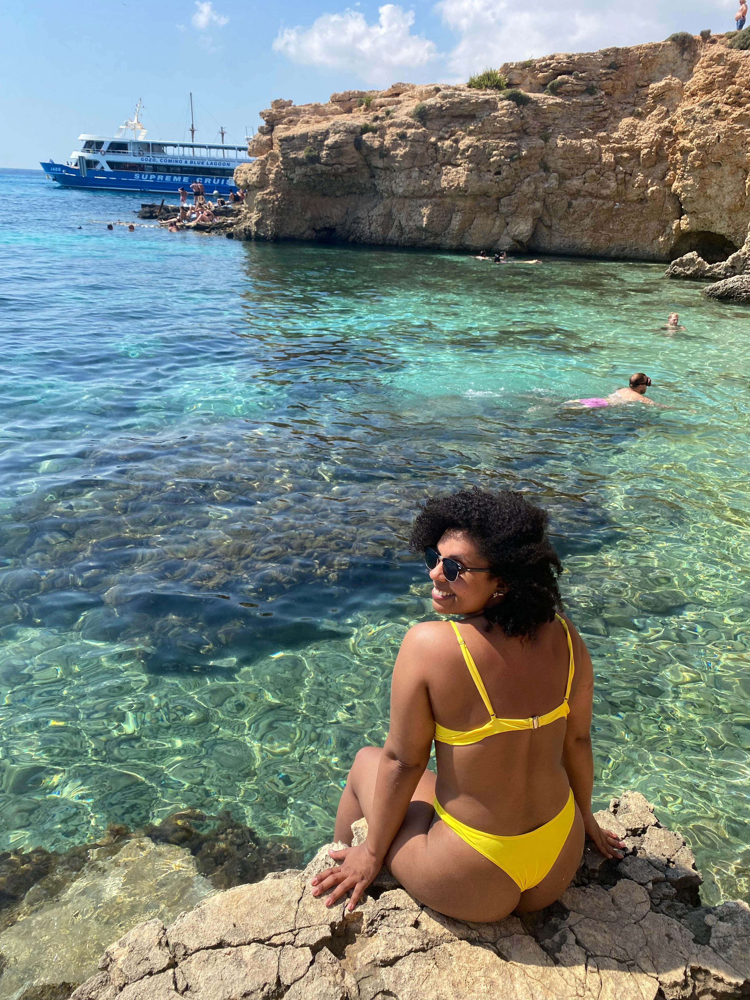
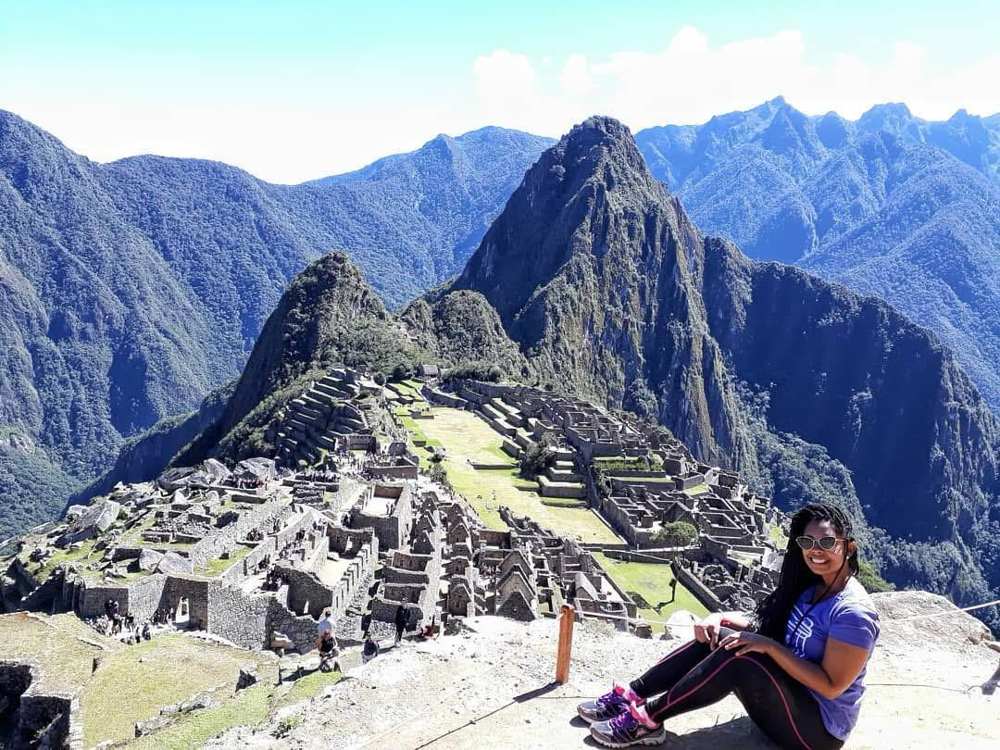
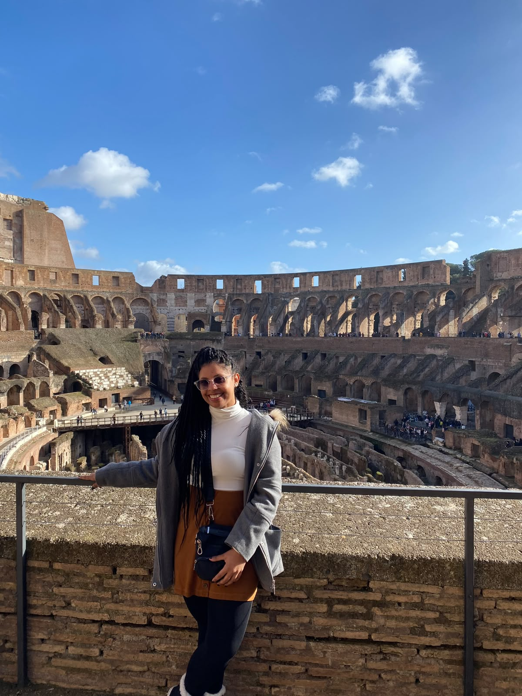
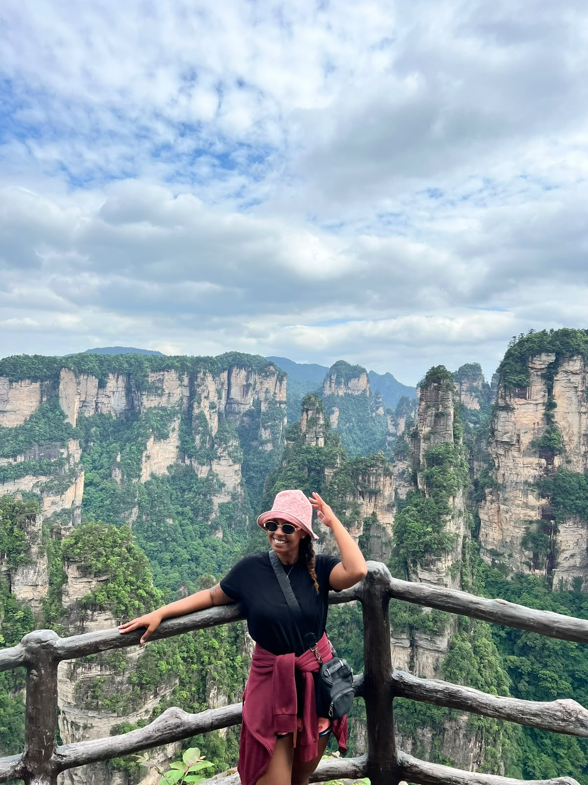

7 to 10 Days
7 to 10 Days
A Mini Winter Backpacking Adventure Through Central Europe: Budapest, Bratislava, Vienna & Prague
Beautiful & Affordable Winter Destinations in Europe.
Detailed itineraries, essential travel apps, smart money habits to fund your dreams, and visual postcards from around the globe.
Thoughtful routes crafted to help you travel with ease, intention, and zero rush.
7 to 10 Days
Beautiful & Affordable Winter Destinations in Europe.

7 DaysIncredible islands, historic cities, and Baroque architecture.
The applications that make managing logistics, currencies, and routes seamless.
Global Currency & Payments
Multi-currency cards for low exchange fees and fair rates abroad, avoiding the stress of carrying large cash amounts.
Zero-Data Navigation
Downloading local maps in advance guarantees smooth navigation even when cellular roaming drops out in remote areas.
Fair Expense Sharing
Keeps track of group dinners, transport passes, and grocery runs clearly and transparently with travel companions.
Fare Tracking & Alerts
Essential for comparing airline price trends, spotting sweet spot dates, and locking in smart booking windows.
Seeing the world doesn't require overspending: smart resource management unlocks freedom.
Having breakfast or gathering picnic lunches from local markets can trim down daily dining expenses by up to 40%.
Skip pricey airport taxis. Metro networks, regional trains, and 24h to 72h city passes offer large savings and a local perspective.
Most major cultural capitals reserve specific afternoons or the first Sunday of each month for free admission to landmark exhibits.
Visual moments and memories cataloged across different regions of the globe.


